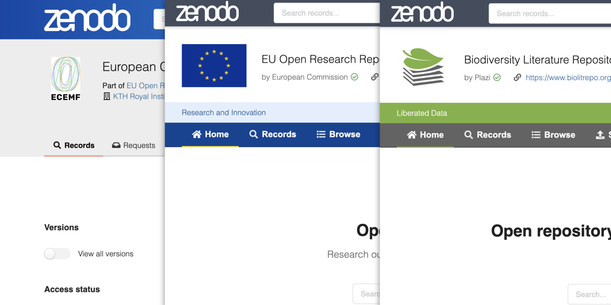
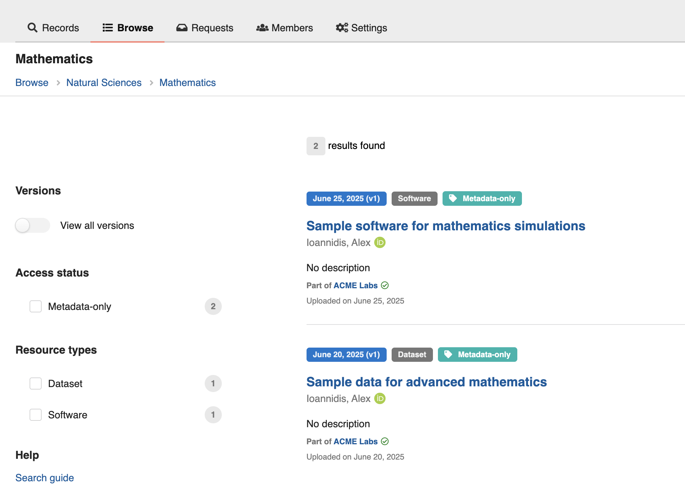
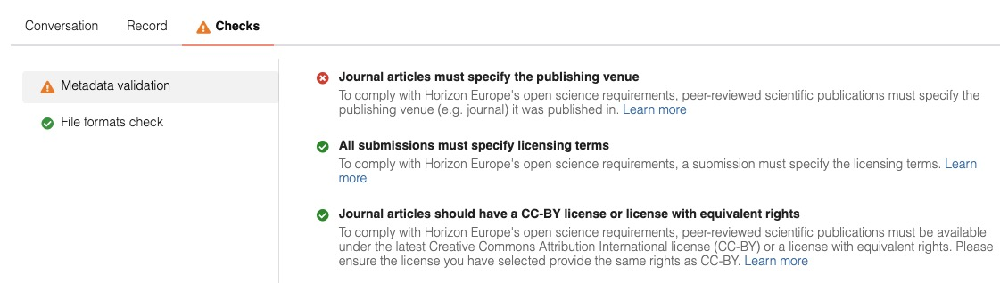
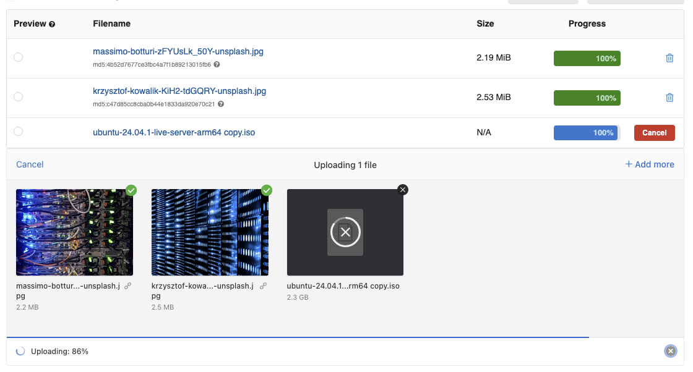
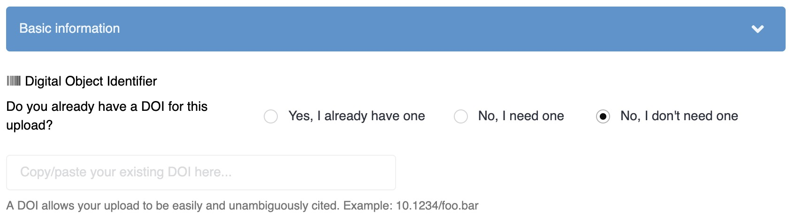
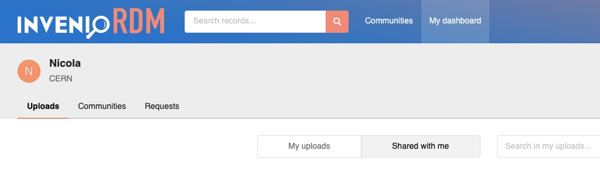
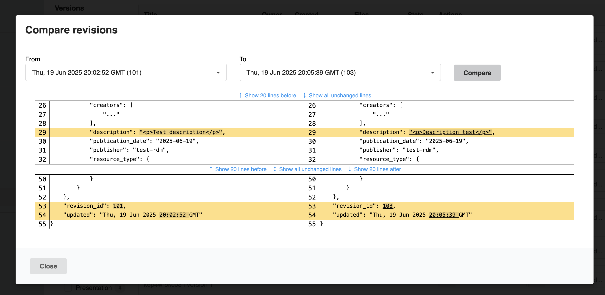
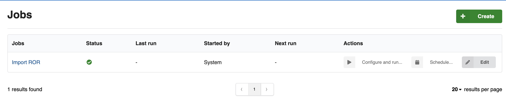

We are excited to announce the release of InvenioRDM v13.0 on July 23, 2025! This new version brings a host of new features and improvements, building upon the strong foundation of previous releases.

Try it
Want to try the new features in v13.0? Just head over to the demo site. If you want to install it, you can follow the installation instructions.
Release Notes
See the full release notes for details on all the new features, and the upgrade guide for instructions on how to upgrade from your v12 instance to v13.
What's new?
InvenioRDM v13.0 focuses on enhancing administrative capabilities, improving community features, and introducing powerful new tools for data management and organization. Here are some of the major highlights, be sure to check the release notes for a comprehensive list of new features and improvements.
Communities enhancements
The Communities functionality has been significantly expanded with exciting new features:
Themed communities
Communities can now be customized with unique fonts, colors, and homepages. These themes apply to all community pages, including records and requests, allowing for a more branded and distinct user experience.

Subcommunities
InvenioRDM v13.0 introduces hierarchical relationships between communities through subcommunities. This allows for structured organization, where records from child communities are automatically indexed in parent communities. A dedicated "Browse" page lists subcommunities and collections, providing a clear overview.
Collections
Collections are a powerful new feature enabling dynamic, query-based groupings of records that automatically update. Collections provide dedicated pages for records matching specific criteria and can be organized hierarchically by subject, resource type, funding program, or other metadata fields. This is ideal for grouping content by research disciplines, publication dates, or funding programs.

Curation checks
It is now possible to configure automated checks in your communities to provide instant feedback on draft review and record inclusion requests. Checks provide feedback to both the user and reviewer that submissions to your community are compliant with your curation policy.

Files uploader & S3-compatible storage
The new file uploader delivers a faster, more intuitive, and modern file upload experience. It also enables advanced features such as multipart file transfers with S3-compatible storage backends.

FAIR Signposting
With v13, you can now enable support for FAIR Signposting level 1 in addition to the automatically enabled level 2.
Sitemaps
InvenioRDM v13 introduces the automatic generation of sitemaps to help search engines and other crawlers discover and index your repository's content. Sitemaps are even automatically linked in your robots.txt.
DOIs on demand
You can now let users to choose if they need a DOI or not when uploading.

New metadata fields
We have introduced new metadata fields that will allow you to capture more useful information when uploading:
- A dedicated copyright field is now available, ensuring clear and comprehensive copyright information.
- We've added a new Thesis set of optional metadata fields. We've also reorganized the thesis section, grouping thesis fields together.
- The edition field has been introduced under the Imprint set of optional metadata fields, providing a way to specify the edition of a book.
- A new identifiers field, composed of id and scheme, has been added to the Meeting set of optional metadata fields.
Dashboard: shared with you
You can now easily find records and requests shared with you.

Compare revisions
A brand new compare revisions feature has been introduced, allowing administrators to audit record updates and track changes over time. This provides a transparent history of modifications, crucial for data integrity and compliance.

Audit Logs
A significant addition is audit logs, a new feature designed for tracking system activities and providing a detailed record of events accessible from the administration panel.
Jobs
This release introduces a new jobs feature, providing a comprehensive way to manage asynchronous tasks via the UI or REST API. Jobs are triggered via the admin UI or REST API, run using Celery, and support logging, argument validation, and result tracking.

Jobs can be very useful to setup automatic recurrent fetching of ROR and ORCID databases or other vocabularies.
Breaking changes
Make sure to read the Breaking Changes section in the release notes.
Requirements
InvenioRDM v13 requires:
- Python 3.9 (end of life October 2025), 3.11 and 3.12
- Node.js 18+
- PostgreSQL 12+
- OpenSearch v2.12+
Questions
If you have questions related to the InvenioRDM v13.0 release, don't hesitate to jump on Discord and ask us!
Credit
The development work of this impressive release wouldn't have been possible without the help of these great people (name or GitHub handle, alphabetically sorted):
- Adrian Moennich
- alejandromumo
- Alex Ioannidis
- Alzbeta Pokorna
- Anika Churilova
- Austin Sharp
- Brian Kelly
- Carlin MacKenzie
- Christoph Ladurner
- Cristian Pogolsha MBP
- Dan Granville
- David Eckhard
- David Glueck
- ducica
- Eduard Nitu
- Emil Dandanell Agerschou
- Eric Newman
- Eric Phetteplace
- Esteban J. G. Gabancho
- Fatimah Zulfiqar
- Felipe Carlos
- Florian Gantner
- Furkan Kalkan
- Guillaume Viger
- Hrafn Malmquist
- Ian W. Scott
- Janne Jensen
- Javier Romero Castro
- Karl Krägelin
- Karolina Przerwa
- libremente
- liptakpanna
- Martin Fenner
- Martin Obersteiner
- Matt Carson
- Maximilian Moser
- mb-wali
- Michael Groh
- Mirek Simek
- Miroslav Bauer
- mkloeppe
- Nicola Tarocco
- Pablo Panero
- Pablo Saiz
- Pablo Tamarit
- Panna Liptak
- roll
- Saksham Arora
- Sam Arbid
- Sarah Wiechers
- Tom Morrell
- Werner Greßhoff
- Will Riley
- Yash Lamba
- Zacharias Zacharodimos